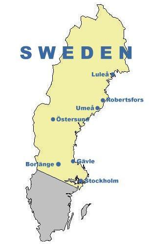
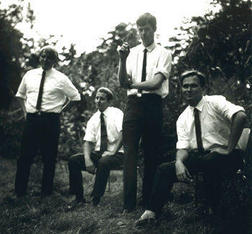
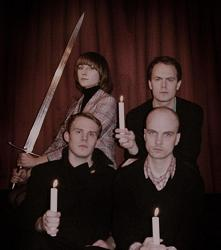
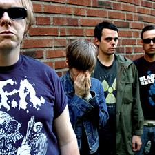

The Sound of Independent Sweden (Part One)
It’s been nearly forty years since Cliff Richard infamously branded Sweden a hotbed of alcoholism, suicide, gonorrhoea, and pornography. I’m pleased to say its reputation has improved significantly since then. Nowadays, non-Swedes associate the country with safe cars, flat-pack furniture and, well, pornography. Some stereotypes are hard to shift.
For a nation of just over nine million inhabitants, Sweden has always punched above its weight when it comes to making successful popular music. It’s the land of multi-platinum selling pop – ABBA, Roxette, the Cardigans, Ace of Base, producer/songwriter Max Martin, etc. – and there’s nothing wrong with that. Over the last decade or so, however, significant numbers of independent Swedish artists have been embraced by a burgeoning cult of fans worldwide. Swedish indie nights are a growing phenomenon in several major European cities, and specialist blogs like itsatrap.com are helping to unite listeners and provide exposure to up-and-coming bands. Factor in the advent of social networking sites like last.fm and you’ve got all of the key ingredients for a musical revolution.
As you may have noticed, I have a rather large soft spot for Swedish music, and I’ve been planning to a feature on some of my favourite lesser-known Swedes for some time. I began to write this piece as a simple top ten back in February, but the list gradually snowballed into an unwieldy top fifty, forcing me to split the article into two parts. I thought about trimming it down, but I didn’t have the heart to cut any of my favourites out.
Rather than list the artists randomly or alphabetically, I thought it would be fun – and perhaps instructive – if I listed them by location. Sweden is a large, culturally diverse country, after all, and I think it’s important to appreciate that just because a band from Luleå plays indie-pop music, it doesn’t necessarily have anything to do with, say, the Stockholm scene (unless, of course, the band is signed to Labrador). You get the idea.
Finally, this is not meant to be an exhaustive list; to summarise an entire country’s music scene is way beyond the scope of a two-part feature. Think of it instead as an assortment of my favourites at the time of writing. I’d love these articles to kick-start a discussion about other worthy Swedish acts, so if you think I’ve missed anybody out, please use the comments section below to fill in the gaps.
. . .
PART ONE: STOCKHOLM AND THE NORTH
Before the pedants jump in, yes, I am fully aware that in the grand scheme of things Stockholm is in the southern half of Sweden. Nevertheless, I had to divide these fifty selections into two arbitrary camps somehow and this seemed to be the easiest way. The second part of the feature will cover Gothenburg & the South (shaded grey on the map).
Stockholm:
Given that 2 million Swedes live in its metropolitan area, it’s no surprise that the nation’s capital city boasts what is arguably its most vital music scene. Stockholm is also home to Sweden’s premier indie-pop label, Labrador, which certainly helps to strengthen its case. The following sixteen acts call the Stockholm area home:
Taxi Taxi! [Myspace]
It’s been nearly two years since twin sisters Miriam and Johanna Berhan released their debut EP on Danish label Rumraket. Since then they’ve kind of dropped off the radar, but a blog post on their MySpace site suggests that a new album isn’t too far away from release. Expect more delicate melodies and plenty of soulful vocal harmonies.
The Knife [Myspace]
An obvious choice, perhaps, but how could I exclude the Knife from a feature like this? Silent Shout was deservedly one of the most acclaimed records of 2006 and that fact that it debuted at #1 in the Swedish charts illustrates what a great country Sweden is. See also, Fever Ray - Karin Dreijer Andersson’s solo project.
Taken By Trees [Myspace]
Taken by Trees is the solo project of former Concretes singer Victoria Bergsman. While she’s only released one album so far, 2007’s Open Field, which featured backing vocals from Lykke Li and production by Björn Yttling (see below), Bergsman also made a notable contribution to Jen Lekman’s Four Songs By Arthur Russell EP.
Acid House Kings [Myspace]
The first of many Labrador acts to feature here, Acid House Kings are pretty much indie-pop royalty in Sweden. Because I don’t have any ABBA in my music library, my iPod is forever trying to start the day with blast of Acid House Kings’ Sunday Morning, which isn’t always a bad thing. According to the Labrador site, “a new album defining the meaning of pop” is scheduled for 2009 release.
Lykke Li [Myspace]
One of Sweden’s big commercial success stories of 2008, Lykke Li, who just turned 23, specialises in the kind of cute, off-centre pop music that warms the otherwise cold hearts of music critics and sells in good numbers. She’s a record label’s dream, clearly.
First Aid Kit [Myspace]
These Fleet Fox-covering sisters Johanna and Klara Söderberg are much more than just a YouTube sensation. The pair’s pastoral brand of indie-folk features some great harmonies and their mature songwriting puts a lot of artists twice their age to shame.
Peter, Björn and John [Myspace]
An obvious choice, yes, but PB&J have not achieved global success without good reason. Young Folks was named the iTunes #1 song of 2007 and has already been covered by a myriad of different artists from all genres, but PB&J have recorded five albums (the latest of which earned a respectable 7/10 rating on this site a couple of months ago) and have contributed a great deal to the Swedish music scene in general.
Robyn [Myspace]
Forget Madonna, screw Christina, and stop feeling sorry for Britney – Robyn is the real queen of pop. Her music packs as much intelligence as it does melodic muscle and the fact that she has succeeded on her own terms, without necessarily having the strongest voice in the world, is a great testament to her songwriting talents.
The Field [Myspace]
The Field’s stunning ambient-techno album From Here We Go Sublime was arguably the dance album of 2007. A futuristic slice of minimalism, it still sounds unbelievably fresh today.
Happydeadmen [Myspace]
The Labrador website refers to Happydeadmen as Sweden’s first indie-pop band, which seems like a pretty reasonable claim to me. The band’s ten year career began with a bang in the glorious form of 1988’s jangle-pop masterpiece Silent Sigh City (it’s on MySpace, check it out) and, as the Labrador compilation Classics – A Decade in Pop confirms, they never looked back. They’re no longer making music together, but don’t let that put you off: when it comes to indie-pop, Happydeadmen are up there with the very best, past and present.
The Morning Paper [Myspace]
Essentially the solo project of David Kyhlberg, The Morning Paper began life in Malmö but is now based in Stockholm. Kyhlberg strikes me as a studio perfectionist, carefully crafting stunning slices of shimmering dream-pop. The Morning Paper is pretty big in Japan apparently, but I figure this music should be big news everywhere. Check it out.
The Garlands [Myspace]
If you thought Brooklyn had the monopoly on insanely melodic noise-pop then the Garlands will force you to think again. Cult songwriter Roger Gunnarsson has been penning effortless indie-pop anthems for years (see also: Nixon, Free Loan Investments) prompting fans on last.fm to create a tribute group called ‘Roger Gunnarsson is a Fucking Hero’. They’re not wrong.
Christian Kjellvander [Myspace]
Imagine if Sweden had its very own version of Will Oldham? Not only does Christian Kjellvander sound eerily similar to the Bonnie Prince, but he’s just as prolific. Fans of husky Americana will appreciate songs like Portugal and Somewhere Else.
Dungen [Myspace]
They initially formed in rural Västergötland but everyone’s favourite psych-folk-rockers are now based in Stockholm. Everyone knows about the international breakthrough Ta Det Lugnt, but 2008’s 4 was just as vital. A phenomenal live band, too.
The Shout Out Louds [Myspace]
The Shout Out Louds specialise in summery guitar pop music. After a frustratingly lightweight debut the band made significant improvements on their last album, Our Ill Wills, which was produced by the practically omnipresent Björn Yttling.
The Legends [Myspace]
Listening to 2004’s multi-layered Up Against the Legends now, I’m struck by how joyous and fresh it still sounds. I suspect this is because I never quite played it enough. Initially marketed as a mysterious nine-piece band, we now know that this album was the product of one man, the disgustingly talented Johan Angergård (see also: Acid House Kings, Club 8). It’s well worth digging out your copy or, if you don’t have it, tracking one down; it’s undoubtedly one of the best Swedish rock albums of the decade.
Östersund:
Östersund is a picturesque lakeside city in the county of Jämtland. It’s pretty isolated – Stockholm is a good 5-6 train journey away – but big enough, with just shy of 50,000 inhabitants, to support a thriving musical community.
Vapnet [Myspace]
This indie-pop collective from Östersund could well be Sweden’s best kept secret. If you don’t understand Swedish, interpreting the lyrics is going to be a bit of a struggle; nevertheless, there’s always more than enough going on melodically to make up for this. Have a listen to Thoméegränd and Rådhusgatan, from their debut album Jag vet hur man väntar, or the surprise Swedish indie hit Kalla Mig and you’ll see exactly what I mean.
Penny Century [Myspace]
Another great and underexposed indie-pop outfit, Penny Century actually featured on a No Ripcord podcast last year. The band is signed to Whitehaven-based Letterbox Records and their debut album Between a Hundred Lies is an exercise in harmony-drenched pop perfection. They also score bonus marks for taking their name from a rather awesome Bear Quartet album.
Robertsfors:
A small town (population 2,000) on Sweden’s north east coast, Robertsfors has a pretty strong musical tradition, as evidenced by the two names below. Please correct me if I’m wrong, but I can only assume there is isn’t a great deal else going on here.
Sahara Hotnights [Myspace]
After a couple of well-received albums with RCA, Sahara Hotnights seem to have retreated from the limelight somewhat. I heard very little about albums number four and five, although reviews in Sweden seem to have been pretty positive. Still, the band’s first three records, in particular the excellent new wave inspired Kiss & Tell, are easily strong enough to warrant a recommendation in this feature.
Frida Hyvönen [Myspace]
With nostalgic, autobiographical lyrics and sparse piano-based arrangements, Frida Hyvönen’s work will appeal to fans of Jens Lekman and El Perro Del Mar. Her third album Silence is Wild, which came out on Secretly Canadian last year, is a great starting point for the uninitiated.
Umeå:
One of Sweden’s fastest growing cities and a student stronghold, Umeå has a strong musical tradition, which is arguably underrepresented here. If Kerrang! compiled a similar list, I would expect it to focus heavily on the famous Umeå hardcore scene. But this isn't Kerrang!...
Amandine [Myspace]
Swedish Americana? It certainly sounds wrong on paper, but the members of Amandine, who previously played together as Wichita Linemen, are as talented as they are sincere. The more obvious influences (Neil Young, Sufjan Stevens) are clearly American, but if you immerse yourself in the band’s two Fat Cat albums you’ll find ample evidence of their Swedish roots.
Luleå:
Another student town, Luleå is one of the largest northern cities in Sweden. Famed for its IT industry, Luleå has also produced its share of hardcore/metal acts, none of whom are featured here.
The Bear Quartet [Official site]
I was introduced to the Bear Quartet by a No Ripcord reader called Magdalena in the spring of 2000. Remember mixtapes? Well, Magdalena created the best mixtape ever, introducing me to Guided by Voices, Big Star, Morphine and the Flaming Lips! While I was immediately struck by one of Bear Quartet’s lesser known songs Human Enough, I’ve only just made the effort to delve deeper into the band’s catalogue in recent months. This has been a rewarding experience and I can heartily recommend 1992’s debut Penny Century and 1998’s Personality Crisis.
Gävle:
Apparently Yusuf Islam/Cat Stevens spent a significant chunk of his childhood in the city of Gävle, although I don’t think it would be fair to include him here. The city is also famous for a large straw Yule goat, which is a frequent victim of arson/vandalism. Only in Sweden.
The Deer Tracks – not to be confused with a million other bands with “deer” in their name, especially Deer Tick – specialise in glitchy electronic-pop. Yes This Is My Broken Shield is their greatest achievement and can be enjoyed in full on the band’s MySpace page.
Uppsala:
Uppsala is the fourth largest city in Sweden with 128,000 inhabitants. It also boasts the oldest centre of education in Scandinavia and one post-rock band.
Jeniferever [Myspace]
Uppsala’s Jeniferever formed in 1996 and only just released their second album last month. I haven’t heard Spring Tides yet but 2006’s leisurely debut Choose a Bright Morning oozed promise. This could well be a band on the up.
Borlänge:
I visited the town of Borlänge once but all I can remember is a dome-shaped shopping centre called Kupolen. I also spent a few days in neighbouring Falun, which at least had a ski-jump hill and a famous sausage (‘Falukorv’) to its name.
Mando Diao [Myspace]
My girlfriend used to study at nearby Falun and she presented me with a copy of Mando Diao’s debut album Bring ‘Em In back in 2002. I enjoyed the raucous garage rock sounds of songs like Sheepdog and Motown Blood but never got round to reviewing it for the website. The band’s career has taken off in subsequent years and their latest album charted at #1 in several European countries (with the exception of their native Sweden, where Bruce Springsteen’s latest outsold them). While I haven’t listened to anything beyond Hurricane Bar, the slightly disappointing second album, Bring ‘Em In still gets some stereo time every once in a while. It’s also a great driving record.
. . .
Click here to read part two (Gothenburg and the South)